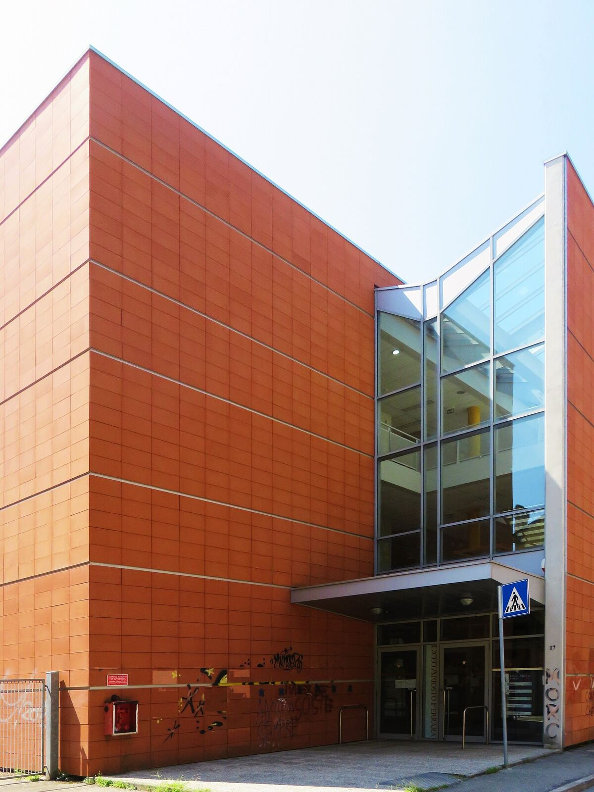
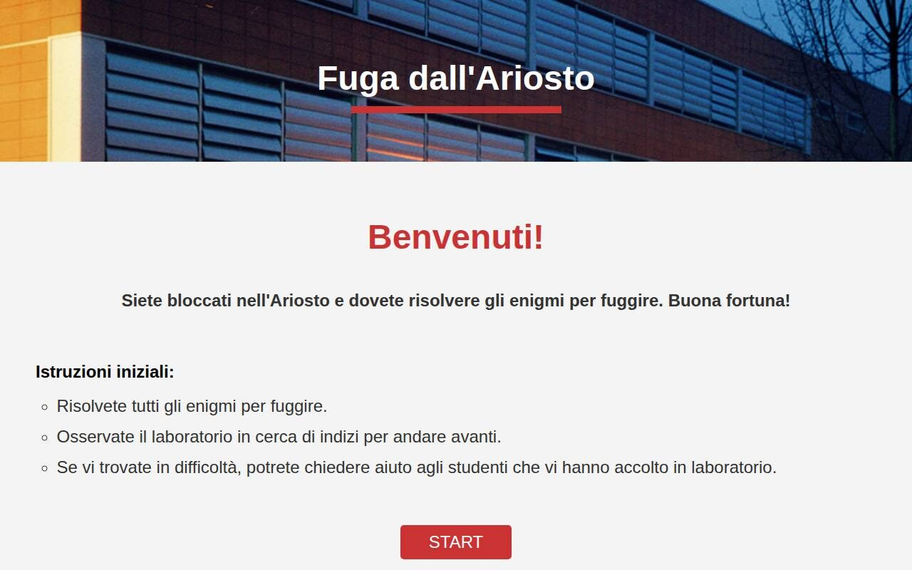
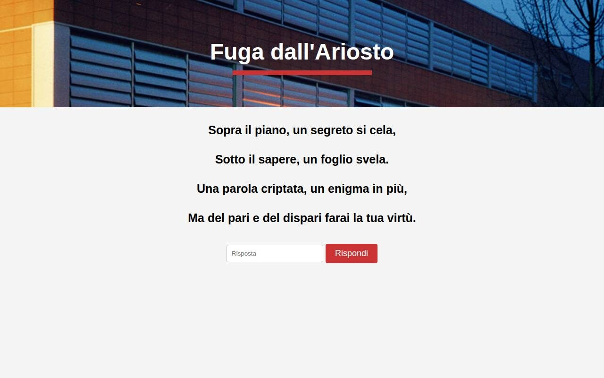
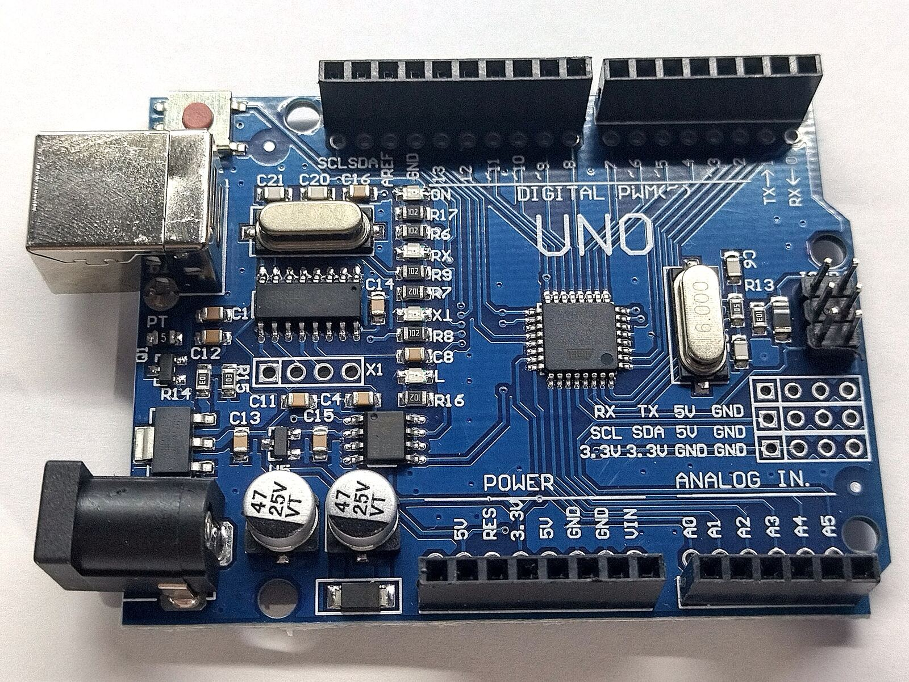

School projects
What I did at Liceo Ariosto beyond the lessons: two orientation labs for middle-school students, and a sensor network for Lab2Go.
2orientation days as a speaker
2games in C, played live
1escape-room website
CO₂and humidity, sent online for Lab2Go
AriostOrienta
AriostOrienta is my school’s open day for middle-school students choosing their next school. Twice I ran the computer science lab.
- 2022: two games in CI showed students something interactive they could write themselves one day. With tic-tac-toe, pairs of students took turns challenging each other. With hangman, one student picked the word and the whole room called out letters.
- 2023: Fuga dall’AriostoThe second year I built an interactive website instead: an escape room whose puzzles could only be solved with clues hidden around the lab. Every solution is commented in the page’s source code.



Lab2Go
A school project in several parts about building real computer systems in the physical world. My part was the link between the hardware and the web.
An Arduino station measured the air (CO₂, humidity and other values), and I connected it to an online database. The database was the heart of the system: a web interface on top of it made the collected data easy to analyse.

- Arduino
- My first real hardware: how a microcontroller reads sensors and sends their values on.
- Real applications
- Software that does something useful outside the screen, in this case for the environment.
- Reading the data
- Analysing measurements that help manage everyday spaces and reduce our impact on them.